After you've chosen which version of Persona to go with (either dark or light) it's time to choose the color skin.
The default skin is the ruby red color, but you can change this by removing the comment tags <!-- --> around the color skin CSS file in your index.html <head> section.
Each grayed out line represents a color skin. If you chose the rose-pink color skin for instance you will be left with the following after removing the comment tags:
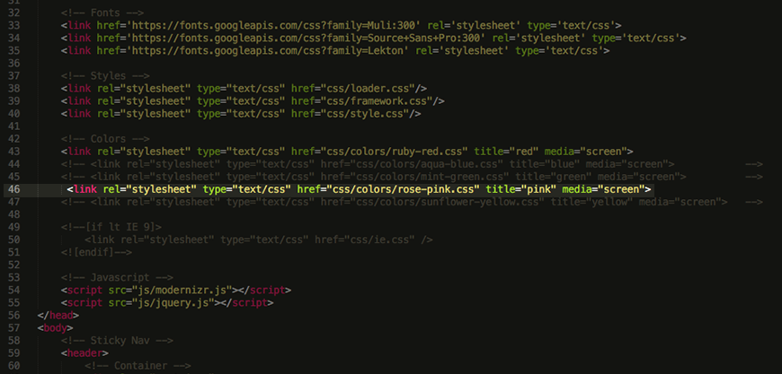For retina support on some images (such as the logo) we use a little script that automatically determines whether the device is retina capable and based on that loads a higher resoluion image if one is provided.
So to setup your images with retina capability you will need to provide two files - logo.png (your logo in normal resolution) and logo@2x.png (your logo in twice the resolution for retina devices). After you have your files just replace the ones that already exist in the /images folder of Persona.
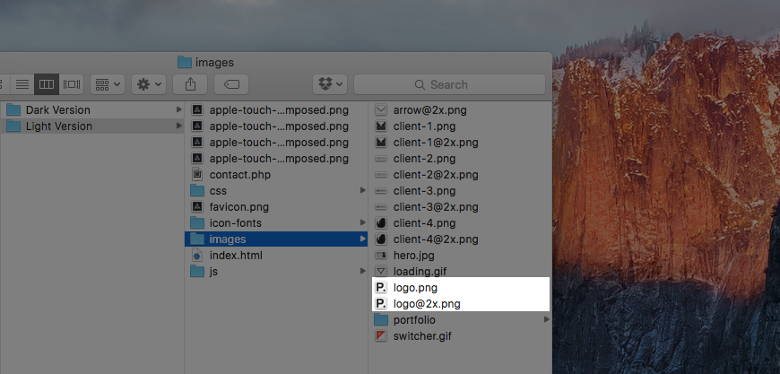The navigation that is included in Persona is almost completely automatic. To have it functioning properly you'd just need to match the href attribute of the links in your navigation to the ID of the section that it navigates to.
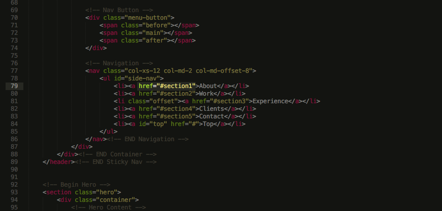 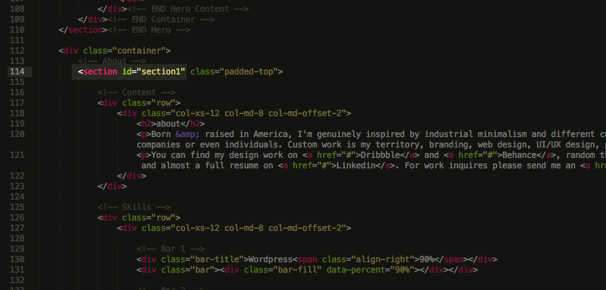The last link with an ID of top has a scroll-to-top function. And the class offset is added to the links for section that overlap with the navigation or are too close to the top of the page when the navigation link is clicked.
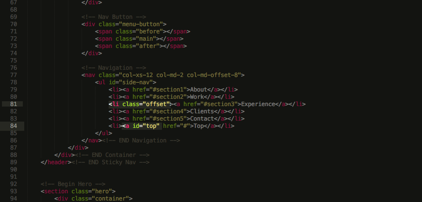Persona includes a neat feature that animates a percentage bar based on a value you setup in the markup. To setup the percentages just head over to your index.html file and locate the skill bars in the about section.
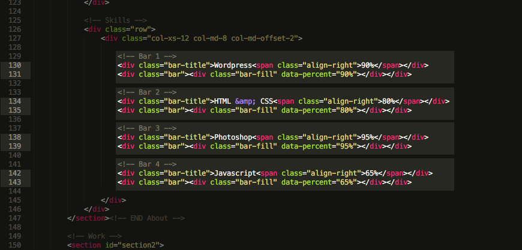Now that you've located them just change the data-percent attribute of a skill bar to the percent which you desire to fill the bar with.
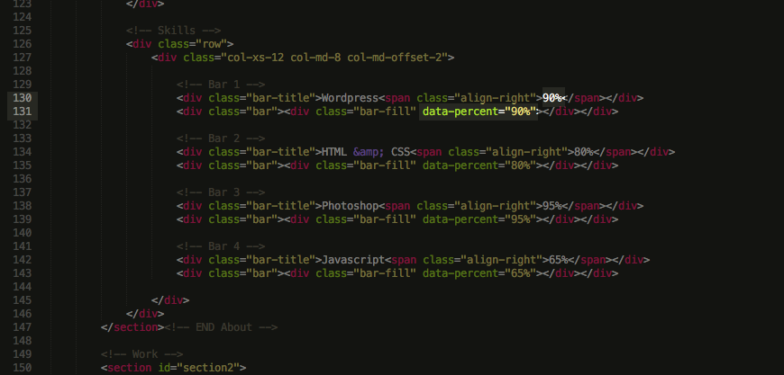Setting up the portfolio requires you to setup two images for each of your projects. One of the images is the thumbnail which must be square. The height of your thumbnail must be always equal to the width. I recommend you just replace the provided images with your own, using the same dimensions if possible. After you've provided the thumbnail image, it appears twice in your markup. The first time as a fallback for browsers that don't support the 3D effect, the second time for browsers that support the effect.
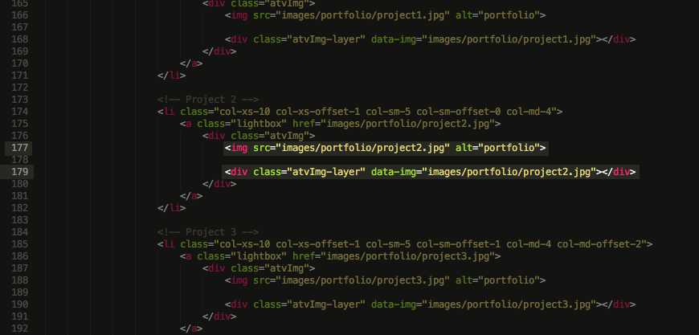The second image you need to setup is for the lightbox. Just change the href attribute of the link in your project container, to the path of your project image.
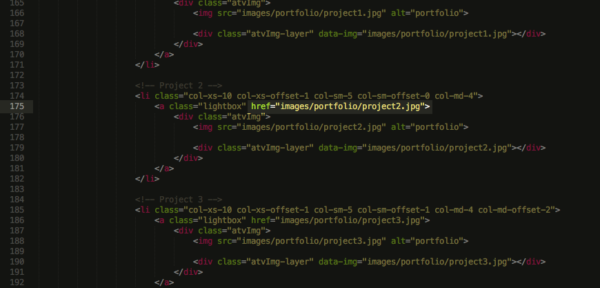The experience timeline is a simple markup setup. Just fill in your information in place of the one provided in your index.html file. The only specific is that the first entry has the class of on, this gives the lates entry in your timeline a little accent color. Just make sure that it is always appended only for the firs entry.
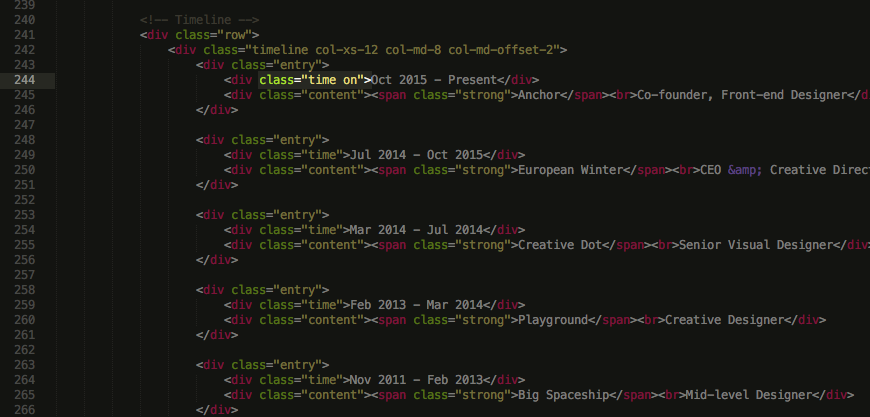To setup the contact form just enter your email in the disagnated place in your contact.php file.
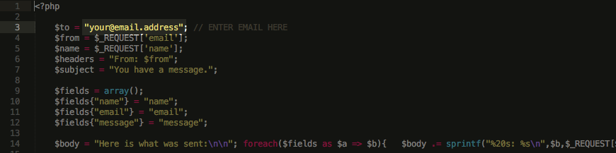Persona includes a set of icons, which are utilized through the use of an icon font. Changing the icons is easy, it just requires a change of a class name to the icon element in your index.html markup.
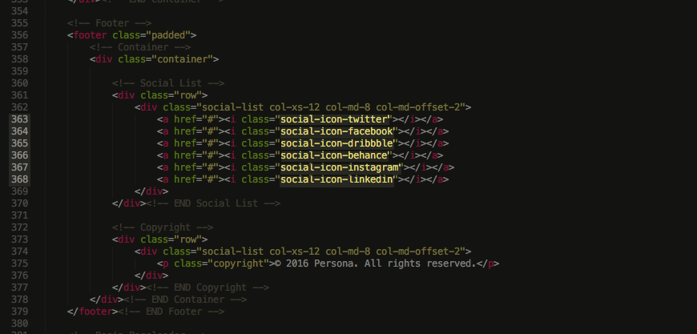You can find a list of the icons and their respective class names here.